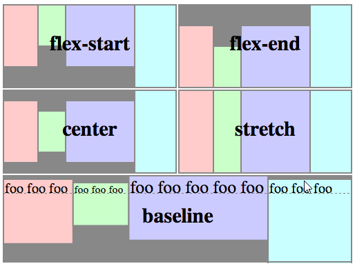

main size - ширина или высота flex-элемента в зависимости от выбранной основной величины. Основная величина может быть либо шириной, либо высотой элемента.
cross size - ширина или высота flex-элемента в зависимости от выбранной размерности равняется этой величине. Это свойство совпадает с width или height элемента в зависимости от выбранной размерности
main-axis - главная ось, вдоль которой располагаются flex-элементы. Обратите внимание, она необязательно должна быть горизонтальной, всё зависит от свойства flex-direction
cross axis - поперечная ось, перпендикулярная к главной. Её направление зависит от направления главной оси.
display: flex | inline-flex;
Применяется к: родительскому элементу flex-контейнера.
Определяет flex-контейнер (инлайновый или блочный в зависимости от выбранного значения), подключает flex-контекст для всех его непосредственных потомков.
display: other values | flex | inline-flex;
flex-direction
Применяется к: родительскому элементу flex-контейнера.
Устанавливает главную ось main-axis, определяя тем самым направление для flex-элементов, размещаемых в контейнере.
flex-direction: row | row-reverse | column | column-reverse
- row (по умолчанию): слева направо для ltr, справа налево для rtl;
- row-reverse: справа налево для ltr, слева направо для rtl;
- column: аналогично row, сверху вниз;
- column-reverse: аналогично row-reverse, снизу вверх.
flex-wrap
Применяется к: родительскому элементу flex-контейнера.
Определяет, будет ли контейнер однострочным или многострочным, а также направление поперечной оси, определяющей направление, в котором будут располагаться новые строки.
flex-wrap: nowrap | wrap | wrap-reverse
- nowrap (по умолчанию): однострочный / слева направо для ltr, справа налево для rtl;
- wrap: многострочный / слева направо для ltr, справа налево для rtl;
- wrap-reverse: многострочный / справа налево для ltr, слева направо для rtl.
flex-flow
Применяется к: родительскому элементу flex-контейнера.
Это сокращение для свойств flex-direction и flex-wrap, вместе определяющих главную и поперечную оси. По умолчанию принимает значение row nowrap.
flex-flow: <'flex-direction'> || <'flex-wrap'>
justify-content
Применяется к: родительскому элементу flex-контейнера.
Определяет выравнивание относительно главной оси. Помогает распределить оставшееся свободное место в случае, когда элементы строки не «тянутся», либо тянутся, но уже достигли своего максимального размера. Также позволяет в некотором роде управлять выравниванием элементов при выходе за границы строки.
justify-content: flex-start | flex-end | center | space-between | space-around
- flex-start (по умолчанию): элементы сдвигаются к началу строки;
- flex-end: элементы сдвигаются к концу строки;
- center: элементы выравниваются по центру строки;
- space-between: элементы распределяются равномерно (первый элемент в начале строки, последний — в конце);
- space-around: элементы распределяются равномерно с равным расстоянием между собой и границами строки.
align-items
Применяется к: родительскому элементу flex-контейнера.
Определяет поведение по умолчанию для того, как flex-элементы располагаются относительно поперечной оси на текущей строке. Считайте это версией justify-content для поперечной оси (перпендикулярной к основной).
align-items: flex-start | flex-end | center | baseline | stretch
- flex-start: граница cross-start для элементов располагается на позиции cross-start;
- flex-end: граница cross-end для элементов располагается на позиции cross-end;
- center: элементы выравниваются по центру поперечной оси;
- baseline: элементы выравниваются по своей базовой линии;
- stretch (по умолчанию): элементы растягиваются, заполняя контейнер (с учётом min-width/max-width).
